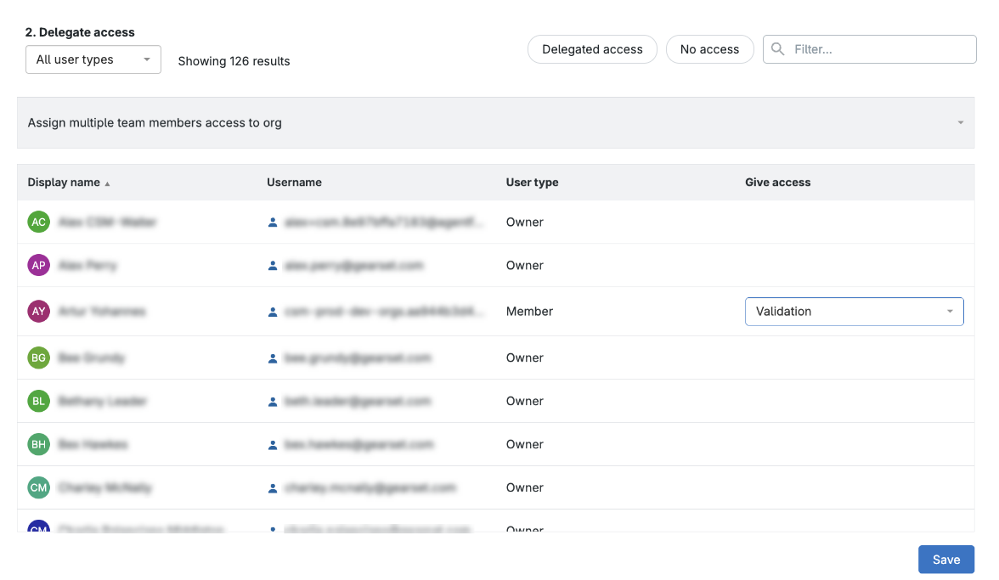
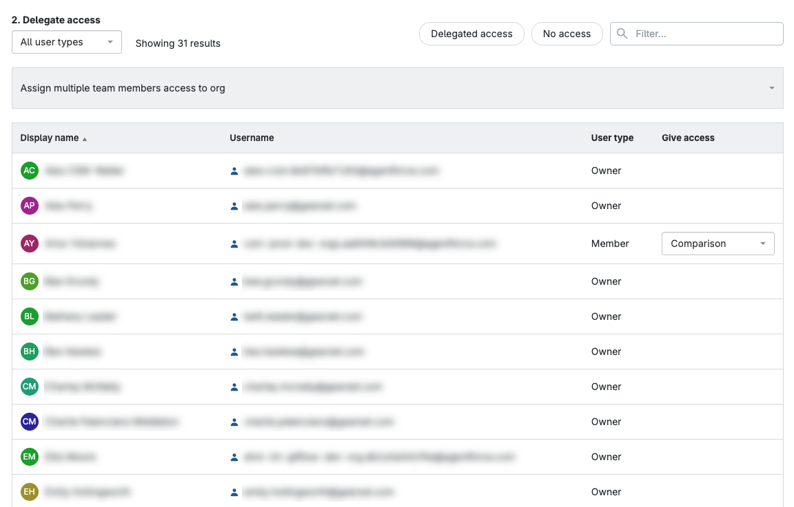
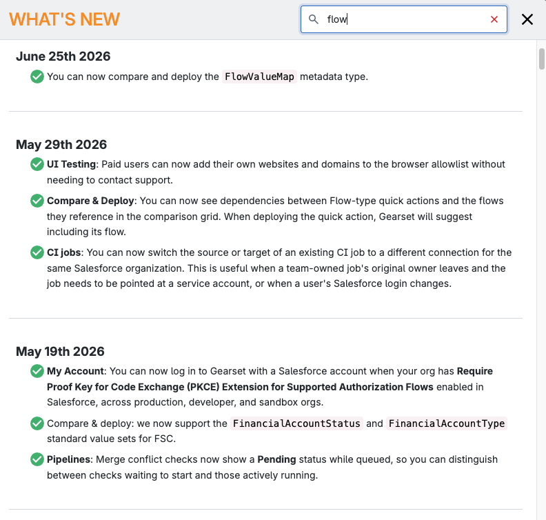
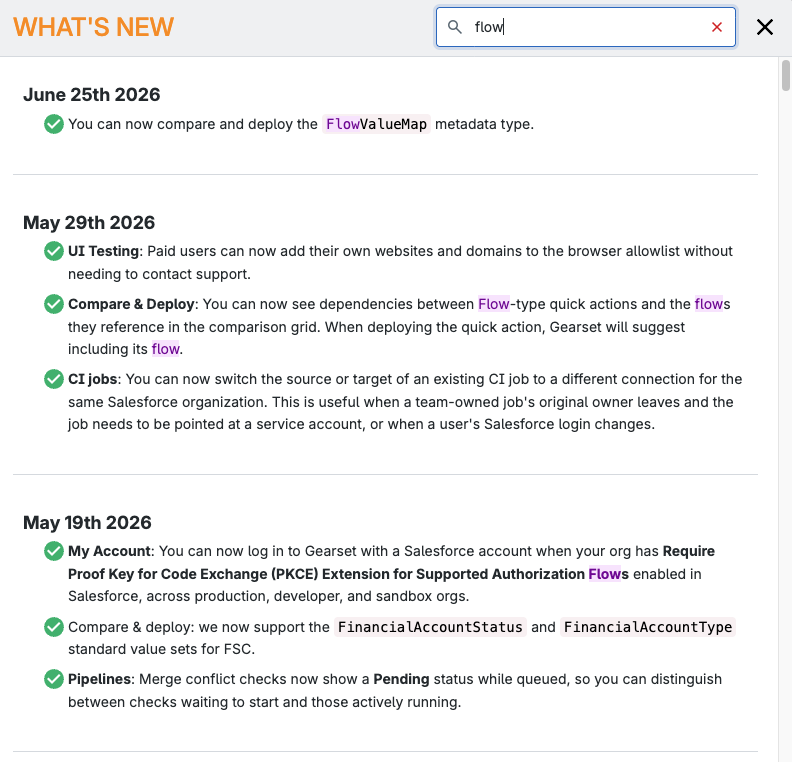
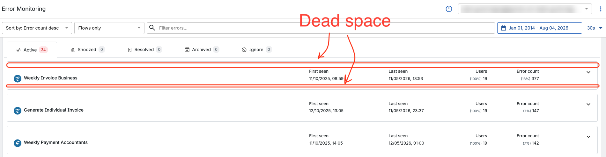
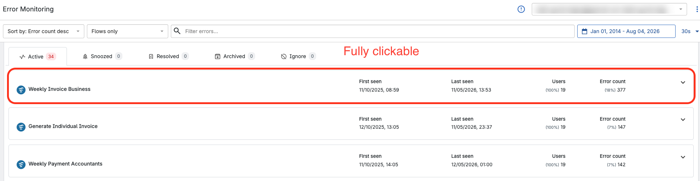

Small UX fixes I identified, prototyped and shipped to production using Claude Code, all from my role as a Customer Success Manager.

The pattern
I'm in Gearset every day, and I'm in it differently to the people who build it. Customer calls, live troubleshooting, and walkthroughs of different product areas. That means I hit the same small frictions our users hit.
Most of the time, logging a ticket isn't enough. So I went and got access to Claude Code and Gearset's codebase, both of which took approval and persistence. Then I learned the workflows, partly from the UX team, mostly self-taught.
Five of those fixes are now in production.
Deep dive
I joined a few product Slack channels that had nothing to do with my job. I wanted to see how the product team talked and went about improving the platform.
That's where I saw a thread about Gearset's largest ever customer. A new enterprise account with a team of over a hundred users, and they were already hitting problems the platform hadn't been built for. Bulk licence assignment was the first one. PMs and designers moved on it quickly, because that account mattered.
I couldn't help with that one. But it stuck with me.
About five weeks later I was in Staging, looking through the admin area with that thread still in my head. Looking for something that would break at a hundred users.
Before

31 users listed in full. The Save button sits below every row.
After
126 users in a scrollable table. Save is always visible.
The delegate org access page listed every user on the team in one long list. To save, you scrolled past all of them.
Fine at ten users. Not fine at a hundred and twenty six.
My first attempt was pagination, fifty per page. This existed in other parts of the platform, so I thought it would work here. But it didn't. The last page had fewer rows than the others, so paging back and forth made the layout jump.
I sent a UX designer the screenshots and asked whether the jump was bad enough to matter, or whether I was overthinking it.
He suggested reusing a table component from elsewhere in the platform.
I raised the PR. In Staging I noticed text bleeding into adjacent columns, something I'd missed locally, so I reverted, fixed it, and raised it again. It's in production now.
The other fixes
Search term highlighting, What's New
I searched for a release note and then had to scan the results to find my own search term. Now matches are highlighted.
Before

After

Clickable card area, Observability
The card looked clickable but only part of it was, so clicks landed on dead space. Now the whole card is a target.
Before

After

The process
The ceiling
Every fix in this case study is small. That's the constraint. From my CSM role I can spot friction and I can ship a fix, but I can't take on more meaningful and higher-impact problems that would need weeks of research, or a team, or a mandate.
I've found the ceiling of what I can do as a CSM. The work I want to do is on the other side of it.